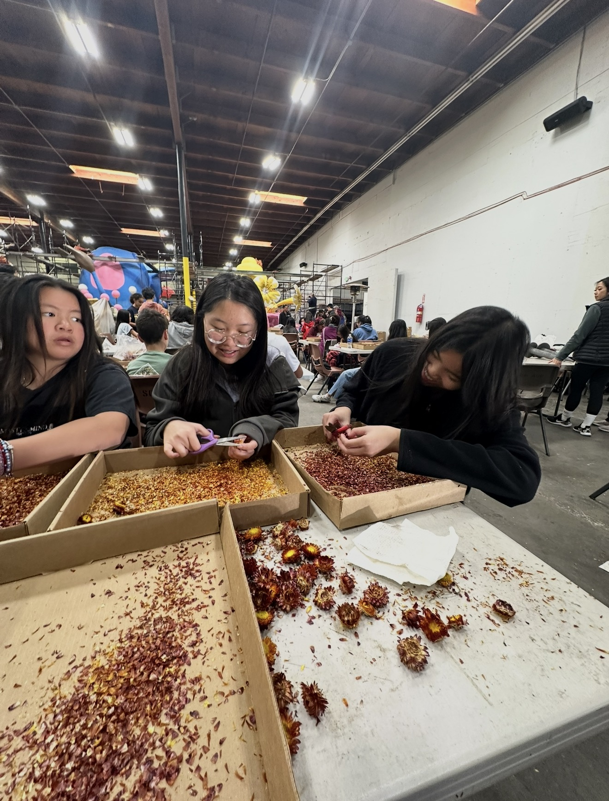
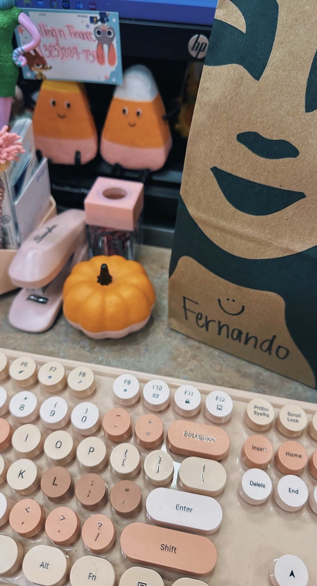
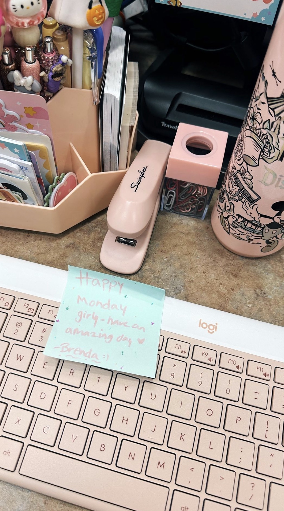
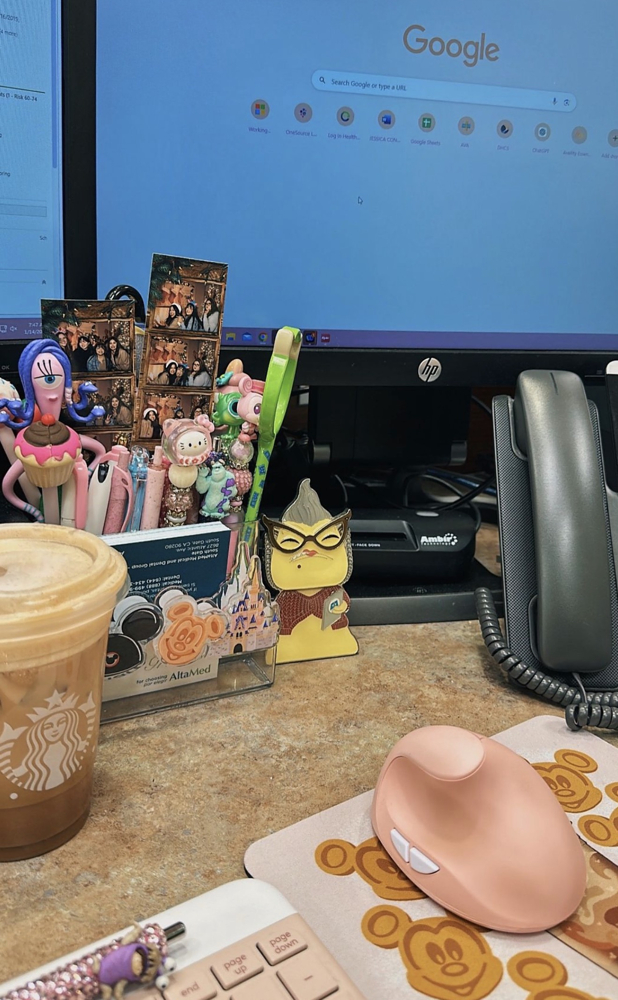

My name is Alex Calimag, and I am currently a freshman at University of California, Riverside majoring in Biology on the pre-nursing track. I’ve always been interested in healthcare because I like the idea of being able to help people in a direct and meaningful way. For me, nursing and healthcare are more than just career paths; they’re about being someone patients can trust and feel comfortable around during difficult or stressful moments. I want to build a future where I can combine science, compassion, and patient care to make a positive impact on others.
I moved to the United States from the Philippines when I was 13 years old, and that experience shaped a big part of who I am today. Starting over in a completely new country came with a lot of changes, especially adjusting to a different culture, school system, and environment. Even though it was challenging at times, it taught me how to adapt quickly, stay motivated, and work hard for the things I want. Looking back, I think that experience helped me become more independent and resilient. It also made me appreciate the opportunities I’ve been given and pushed me to take my education seriously.
Before attending UCR, I took college courses through the Special Admit Program at Mt. San Antonio College while I was still in high school. Balancing high school classes with college coursework taught me a lot about time management and responsibility early on. At first it felt intimidating, but it helped me gain confidence in myself academically and prepared me for college life. Being able to take those courses also confirmed my interest in biology, healthcare, public health, and patient care. I enjoyed learning about the human body and understanding how healthcare professionals help improve people’s lives every day.
As a biology major and pre-nursing student, I’m interested in gaining more hands-on experience through volunteering, internships, and clinical opportunities. I want to continue learning more about patient care, healthcare environments, and how medical professionals support individuals and communities. One of the things that interests me most about healthcare is the human connection behind it. Small acts of care, patience, and understanding can make a huge difference in someone’s experience, and that’s something I hope to bring into my future career.
Outside of academics, I value family, friendships, and personal growth a lot. My family has always encouraged me to work hard and stay focused on my goals, and their support motivates me every day. I also think it’s important to maintain balance in life, especially while pursuing a demanding career path. Whether I’m spending time with friends, walking my dog, or just trying to enjoy everyday moments, I try to stay grounded and remind myself that growth happens both inside and outside the classroom.
This website is a space where I can share more about my journey, experiences, and goals as I continue working toward a career in healthcare. I’m excited to keep learning, meeting new people, and gaining experiences that will help me grow both professionally and personally. My goal is to become a compassionate healthcare professional who can make patients feel supported, respected, and cared for while also continuing to learn and grow throughout my career.
• Participated in volunteer and community activities focused on helping others
• Interested in gaining healthcare and clinical experience through service opportunities
• Passionate about community health, teamwork, and supporting people in need
• Participated in community service and volunteer activities to support the local community
• Worked with peers on school events, service projects, and leadership activities
• Maintained strong academic standing while balancing extracurricular involvement



